Front façade · daylight
Mặt tiền · Ban ngày
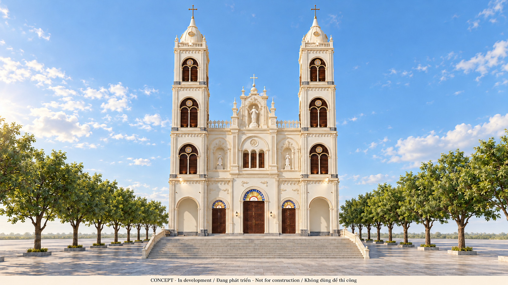
Updated central shrine, triple window and twin towers, viewed from the forecourt.
Download native PNG · 1672 × 941 · Open source 3D capture
Compare with source model / So sánh với mô hình
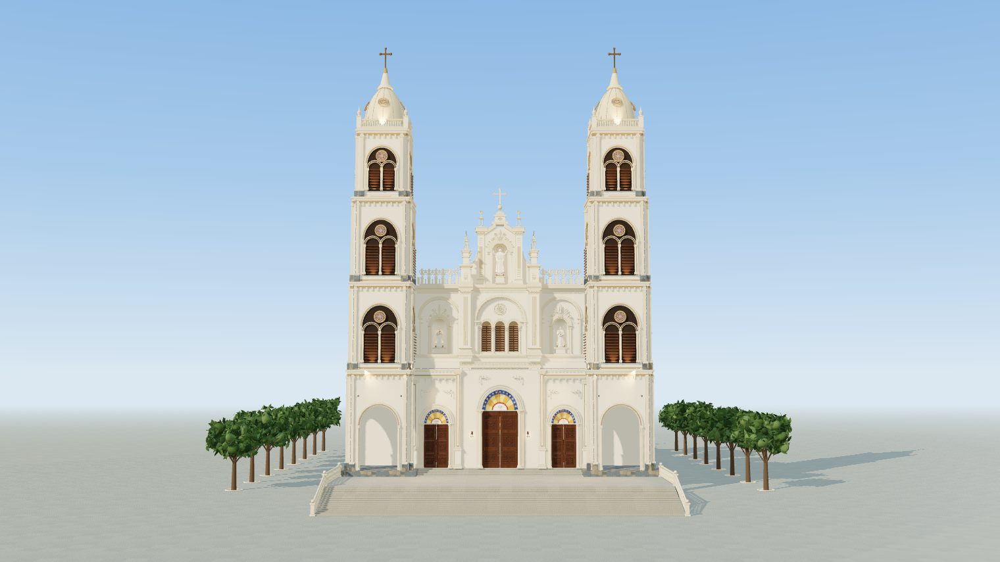
Front and long side · daylight
Góc trước và bên hông · Ban ngày
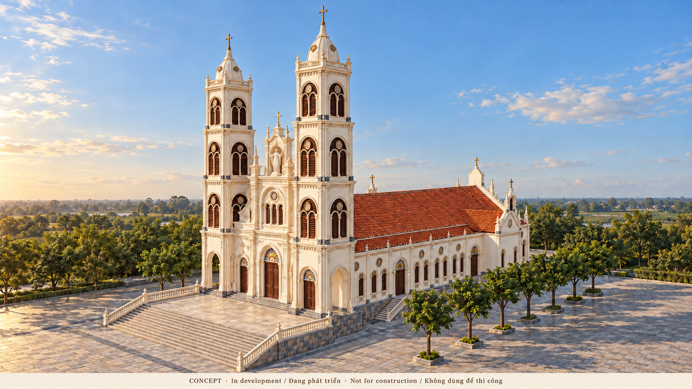
Front three-quarter view with the long terracotta nave roof and side wing.
Download native PNG · 1672 × 941 · Open source 3D capture
Compare with source model / So sánh với mô hình
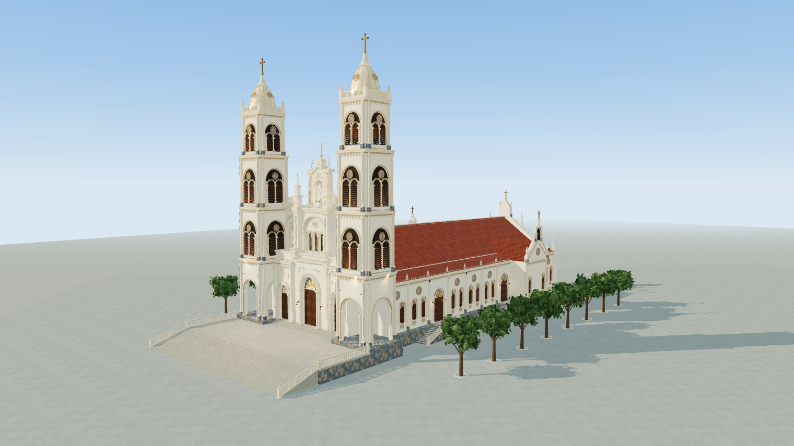
Opposite front corner · evening
Góc trước đối diện · Chiều tối
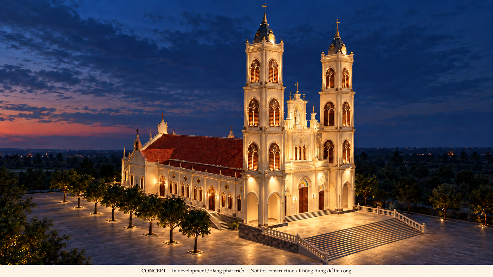
Opposite front corner with an illustrative warm evening lighting treatment.
Download native PNG · 1672 × 941 · Open source 3D capture
Compare with source model / So sánh với mô hình
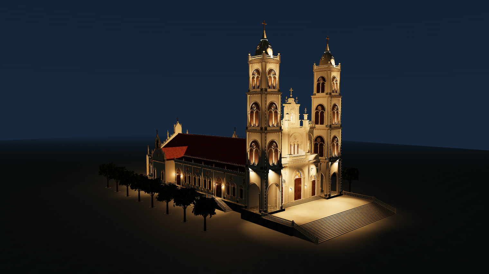
Central façade and shrines · daylight
Chi tiết mặt tiền · Ban ngày
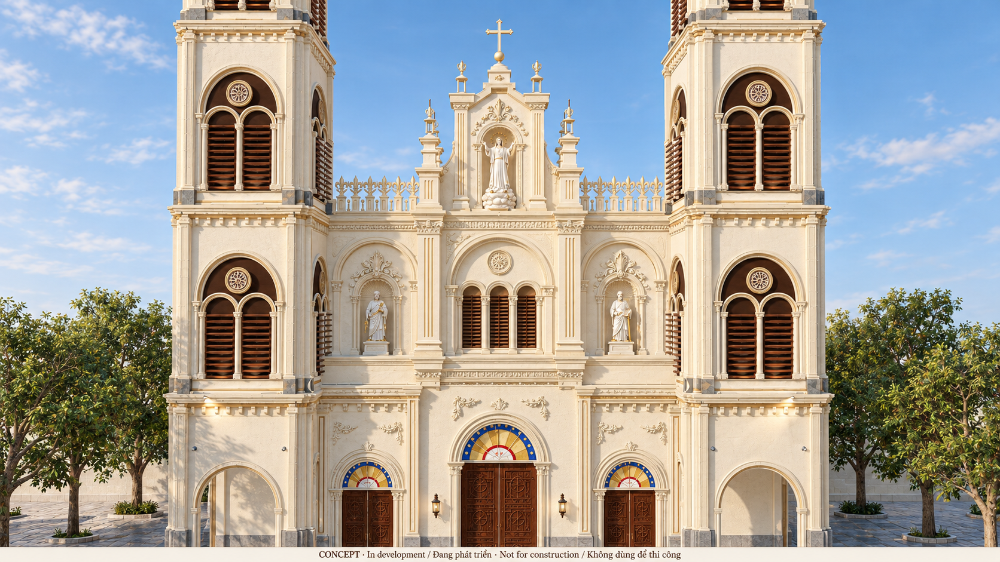
Central Assumption shrine, side saints, triple louvers, cresting and carved doors.
Download native PNG · 1672 × 941 · Open source 3D capture
Compare with source model / So sánh với mô hình
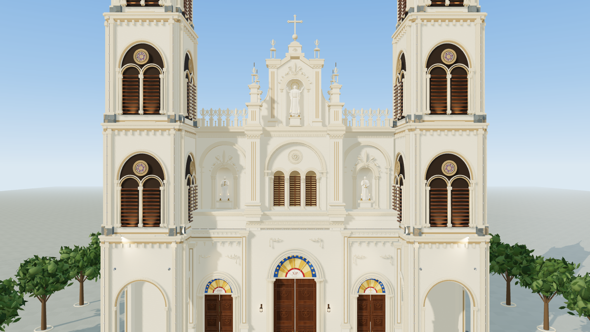
Nave toward sanctuary · daylight
Lòng nhà thờ · Ban ngày
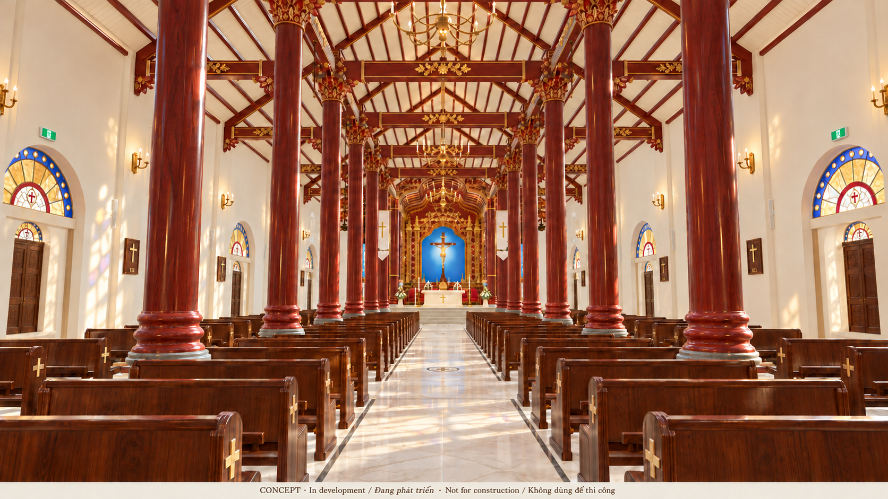
Red lacquer timber columns, gilded carvings and the clear processional view toward the altar. Fan concealment is illustrative only.
Download native PNG · 1672 × 941 · Open source 3D capture
Compare with source model / So sánh với mô hình
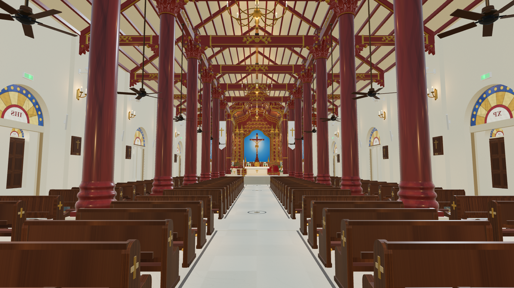
Sanctuary · evening
Cung thánh · Buổi tối
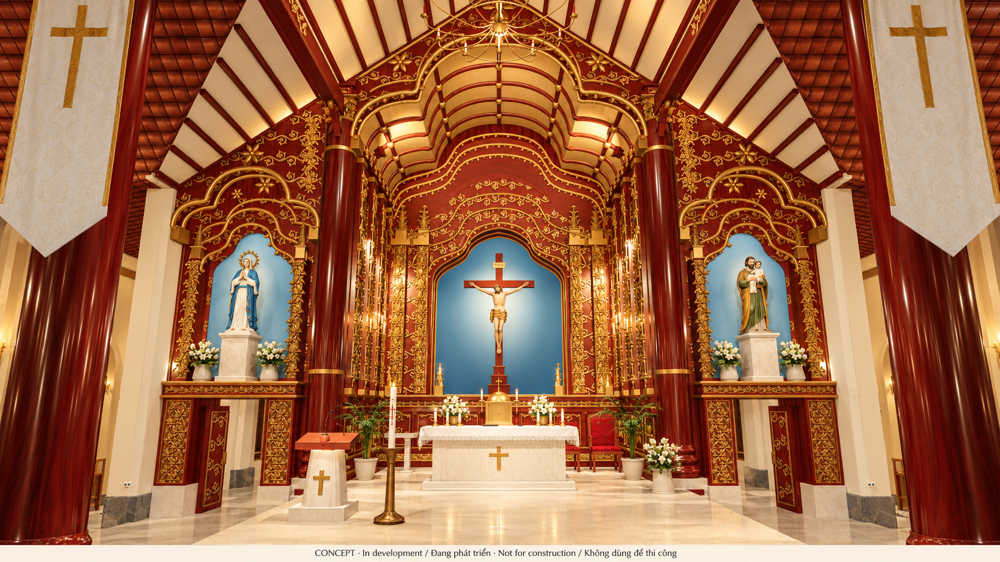
Red-and-gold sanctuary with the central Crucifix, Our Lady and Saint Joseph with the infant Jesus.
Download native PNG · 1672 × 941 · Open source 3D capture
Compare with source model / So sánh với mô hình
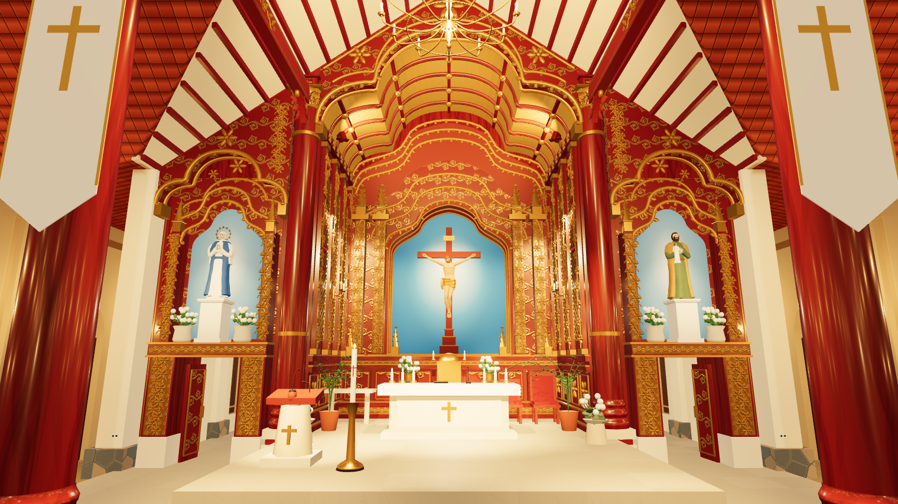